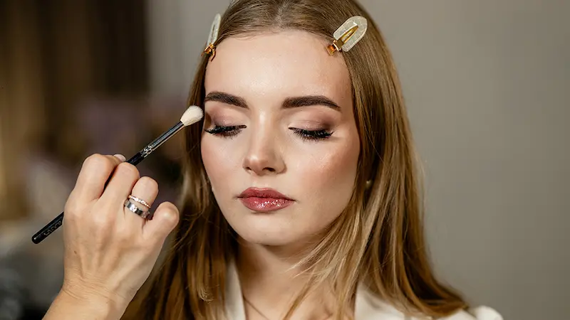
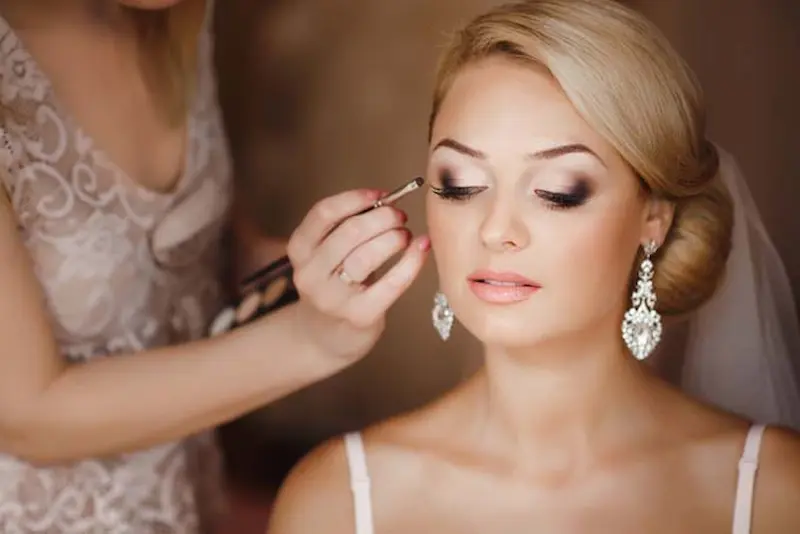

Ghid pentru pagina de machiaj de mireasă
Machiaj de mireasă pas cu pas
Tehnici pentru un look delicat și rezistent
Top produse pentru machiaj de mireasă
Texturi rezistente și ten perfect pentru ziua nunții
Produse premium pentru mireasă
Rezultat impecabil și efect de machiaj profesional
Set accesibil pentru machiaj de mireasă
Produse esențiale pentru un look elegant și durabil
Programează-te la un makeup artist profesionist
Programează-te pentru machiaj de mireasă în România și obține un look rezistent, delicat și perfect pentru foto și video.
Ce este machiajul de mireasă
Machiajul de mireasă este o tehnică specială de machiaj, creată pentru a obține un look delicat, proaspăt și impecabil, care arată perfect atât în realitate, cât și în fotografii.
Acest tip de machiaj combină naturalețea, rezistența și un efect subtil de luminozitate. Evidențiază trăsăturile feței, uniformizează tenul și creează un aspect armonios, fără a încărca machiajul.
Caracteristica principală este echilibrul: machiajul trebuie să fie suficient de expresiv pentru cameră, dar în același timp să rămână fin și elegant în viața reală.
Machiajul de mireasă este ideal pentru evenimente de lungă durată, ședințe foto și filmări, deoarece își păstrează prospețimea și rezistența pe tot parcursul zilei.
De ce machiajul de mireasă arată proaspăt și impecabil
- uniformizează tenul și creează efectul de „piele perfectă” fără aspect încărcat
- evidențiază trăsăturile feței delicat, fără linii dure sau texturi grele
- oferă un plus de luminozitate, pentru un aspect proaspăt și sănătos
- asigură rezistența machiajului pe tot parcursul zilei și al ședințelor foto
- creează un look armonios, care arată frumos atât în realitate, cât și în fotografii

Pregătirea pielii pentru machiajul de mireasă
Machiajul de mireasă trebuie să arate proaspăt, natural și impecabil pe tot parcursul zilei, iar pregătirea pielii este un pas esențial.
O piele bine pregătită permite machiajului să se aplice uniform, să reziste mai mult și să ofere un aspect elegant atât în realitate, cât și în fotografii.
- Curățare — produse delicate pentru un ten curat și neted
- Hidratare — cremă sau serum pentru confort și prospețime
- Primer — uniformizează textura și prelungește rezistența machiajului
- Efect de luminozitate — bază cu glow pentru un aspect natural
- Zona ochilor — patch-uri sau cremă pentru reducerea cearcănelor
Este important să lași produsele să se absoarbă înainte de aplicarea machiajului. Astfel, vei obține o acoperire uniformă, o rezistență mai bună și un rezultat fără efect de încărcare sau estompare.

Machiaj de mireasă pas cu pas


Machiajul de mireasă se bazează pe naturalețe, prospețime și rezistență, pentru ca look-ul să fie impecabil atât în realitate, cât și în fotografii.
Pregătirea pielii
Începe cu hidratare și primer. Acestea creează o bază uniformă
și ajută machiajul să reziste mai mult.
💰 Cost produse: 80 – 200 RON
Fond de ten și corecție
Folosește un fond de ten lejer sau mediu, cu finish natural.
Uniformizează tenul fără efect de mască.
💰 Fond de ten + corector: 120 – 300 RON
Contur și iluminare
Aplică un contur discret și iluminator pentru a evidenția
trăsăturile și a crea efect de lifting.
💰 Contur + iluminator: 100 – 250 RON
Machiajul ochilor
Alege nuanțe neutre (bej, roz, maro). Estomparea fină oferă un
look elegant și expresiv.
💰 Paletă + mascara: 150 – 350 RON
Blush și prospețime
Blush-ul adaugă culoare și un efect romantic. Optează pentru
tonuri naturale de roz sau piersică.
💰 Blush: 70 – 180 RON
Buze și fixare
Finalizează cu un ruj natural sau gloss și fixează machiajul cu
spray profesional pentru rezistență maximă.
💰 Ruj + spray fixare: 100 – 250 RON
💡 Cost total estimativ produse pentru machiaj de mireasă: 600 – 1500 RON (în funcție de brand și calitate)
Machiajul de mireasă perfect înseamnă echilibru între naturalețe și expresivitate — un look luminos, elegant și rezistent pe tot parcursul nunții.
Top produse pentru machiaj de mireasă
Machiajul de mireasă necesită produse rezistente, fotogenice și cu efect natural luminos: fond de ten lejer, glow delicat și accente fine care arată impecabil atât în realitate, cât și în fotografii.
Recenzie independentă. Produsele nu sunt sponsorizate.


Produse premium pentru machiaj de mireasă
Recenzie independentă. Produsele nu sunt sponsorizate.
Produsele premium pentru machiaj de mireasă oferă efect de „ten perfect”, luminozitate delicată și rezistență pe tot parcursul zilei. Acestea arată impecabil atât în realitate, cât și în fotografii, fără să încarce tenul.


Greșeli frecvente în machiajul de mireasă
- fond de ten prea încărcat care creează efect de „mască”
- lipsa unei baze rezistente pentru machiaj
- alegerea greșită a nuanței în funcție de lumină și fotografii
- machiaj prea intens atât la ochi, cât și la buze
- nefolosirea unui spray de fixare pentru rezistență
Machiajul de mireasă trebuie să fie în același timp natural, proaspăt și rezistent. Una dintre cele mai frecvente greșeli este supraîncărcarea machiajului sau alegerea unor culori prea intense, care nu se potrivesc cu rochia și stilul general al nunții.
Secretul unui look reușit este echilibrul — machiajul trebuie să evidențieze frumusețea naturală, păstrând un aspect elegant, luminos și armonios.

Set accesibil pentru machiaj de mireasă (sub 350 RON)
💡 Cost total estimativ: ~250–350 RON
Recenzie independentă. Produsele nu sunt sponsorizate.




Nu ești sigură cum să obții un machiaj de mireasă perfect?
Machiajul de mireasă trebuie să fie perfect echilibrat: rezistent, natural și fotogenic. Fără tehnica potrivită, tenul poate părea încărcat, iar rezultatul final nu va arăta uniform în toate tipurile de lumină.
Programează-te la un make-up artist profesionist și obține un machiaj de mireasă care îți evidențiază trăsăturile, uniformizează tenul și creează un look elegant, luminos și impecabil pe tot parcursul zilei.
Programează-te pentru machiaj de mireasăÎntrebări frecvente despre machiajul de mireasă
Ce este machiajul de mireasă?
Machiajul de mireasă este un machiaj profesional creat pentru rezistență, naturalețe și un aspect impecabil în fotografii și video pe tot parcursul zilei nunții.
Prin ce diferă machiajul de mireasă de machiajul de seară?
Este mai delicat, natural și armonios. Accentul se pune pe frumusețea naturală, nu pe efecte dramatice sau culori intense.
Cât rezistă machiajul de mireasă?
Aplicat corect, cu produse profesionale, machiajul de mireasă rezistă între 12 și 18 ore fără pierderea prospețimii.
Se poate face un machiaj de mireasă natural?
Da, este una dintre cele mai populare alegeri. Evidențiază trăsăturile feței și oferă efectul de „ten perfect”.
Este necesar un machiaj de probă?
Da, machiajul de probă ajută la alegerea look-ului ideal, verificarea rezistenței și ajustarea detaliilor înainte de nuntă.
Cum pregătesc pielea înainte de machiajul de mireasă?
Este importantă hidratarea corectă, o rutină de îngrijire blândă și evitarea tratamentelor agresive cu câteva zile înainte de eveniment.